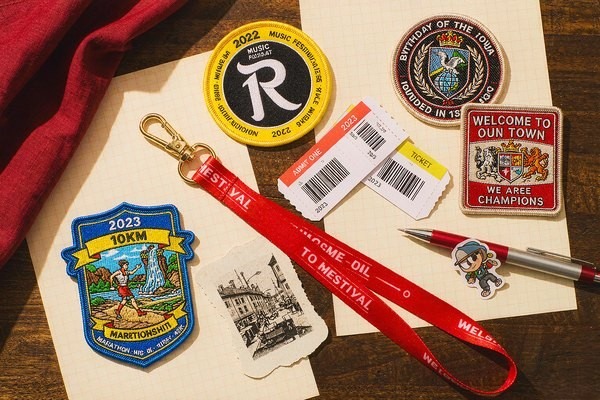
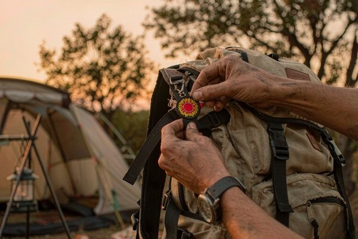

Event Patches: Commemorative & Festival Designs Worth Keeping
A lanyard goes in a drawer and a paper ticket fades, but a stitched badge ends up on a jacket where everyone can see it. That is the whole pitch for event patches: they turn a one-day experience into something attendees wear for years. This guide walks through the occasions that deserve a patch, designs people actually keep, the special effects that make a badge collectible, and the ordering math for events of any size.

Why Patches Beat Medals, Lanyards and Stickers
Events have always handed out proof of attendance. The commemorative medal tradition goes back centuries, and modern races still finish with one. But look at what attendees actually do with the swag: medals hang on a nail, lanyards get tossed, stickers end up on water bottles and eventually in the recycling. A patch behaves differently because it is adoptable — it can migrate from the event tote onto a jacket sleeve, a backpack, a cap, and keep traveling with the person.
That migration is free advertising with a long half-life. A runner who sews a marathon badge onto a training jacket wears your event's name to every future starting line. A festival-goer stitching this year's design next to last year's is building a collection — and coming back next year to complete it. For organizers, that collecting instinct is the real value of commemorative patches: they create a reason to return, and they turn attendees into walking archives of your event's history.
Occasions That Deserve a Patch
Almost anything with a date on it can carry one, but these are the formats where event patches consistently earn their keep:
- Music and arts festivals. Annual designs with the year woven in feed the collecting loop — see how festival culture treats merch as part of the experience. Glow-in-dark thread is a natural fit for night events; the mechanics are in our glow-in-dark guide.
- Races and endurance events. Marathons, trail runs, cycling sportives. Finisher patches often outlive the medal in daily wear, and distance milestones (10K, 21.1K, 42.2K) invite multi-year collections.
- Conferences and trade shows. A subtle crest on a blazer lapel marks "I was there" far better than a badge holder, and speaker or volunteer variants add hierarchy.
- Volunteer and staff programs. A distinct patch recognizes the people who worked the event — cheap, visible, and genuinely treasured.
- Anniversaries and heritage days. Towns, schools, companies marking "50 years" with a limited badge that doubles as a fundraiser.
- Charity drives and awareness campaigns. Ribbon motifs and campaign colors, with the year and goal milestone stitched in.
Designing a Patch People Actually Keep
The difference between a patch that gets sewn on and one that lands in a drawer is usually three things: a strong single symbol, the year, and restraint. Design guidance our team applies to commemorative work:
- One icon, big. A mountain, a guitar, a running shoe, a hot-air balloon — the event's soul in a single silhouette. Icons survive distance and tiny patch sizes; wordmarks rarely do. The fundamentals are in our beginner design guide.
- Put the year in the design, not beside it. "2026" worked into a banner or the border itself makes the badge collectible year over year. An undated event patch can't anchor a collection.
- Two to four thread colors. Every color adds cost and noise. The boldest commemorative designs are usually two-color with a dark border.
- Design the border as part of the art. A die-cut silhouette following the icon's outline — a guitar-shaped badge, a shoe-shaped badge — reads as special the moment it's handed over. Shape options and edge types are compared in our die-cut shapes guide.
- Size for the destination garment. 2–2.5 inches suits a cap or lapel; 3–3.5 inches fills a jacket back panel properly. Sizing rules by placement are in the size guide.

Special Effects That Make a Badge Collectible
Once the base design is solid, a few production upgrades push a patch from "free gift" to "limited edition":
- Metallic thread on the year date or a star — instant trophy feel for finisher and milestone badges.
- Glow-in-dark thread for night festivals, ghost runs and Halloween-season events; it becomes a conversation piece on the dance floor. Safety and charging details live in our glow guide.
- Chenille textures for a retro varsity feel that suits heritage anniversaries — the construction is covered in our chenille guide.
- Numbered runs. Stitching "No. 0417 / 1000" into a small corner tab transforms the same design into a limited series. It costs almost nothing and changes how attendees value the badge.
- Magnetic backing variants for attendees who want to display the patch on a fridge or locker instead of wearing it — the construction is explained in our magnetic patches guide.
You do not need all of these on one patch. Pick one effect that matches the event's mood — glow for a night festival, metallic for a race, numbered run for a cap-height anniversary — and let it carry the "special" burden.
Backings: How Attendees Will Wear It
Match the backing to how the patch will actually be used, because an event attendee will not carry a sewing kit home:
| Backing | Best Event Use | Watch Out For |
|---|---|---|
| Iron-on | Festival merch tables, jackets and tote bags | Needs an iron on-site or clear take-home instructions |
| Adhesive | Single-day conferences, stick-on-today wear | One wash and it's gone — one-day use only |
| Velcro | Staff and security gear, multi-day events | Slightly higher unit cost |
| Sew-on (pre-sewn or DIY) | Collectible series, premium tiers | Attendees need a needle — pair with a "stitch it on" card |
| Magnetic | VIP gifts, display keepsakes | Not for active wear on stretchy fabric |
The full trade-off breakdown is in our backing types guide. One tactic that works well at the merch table: sell the same design twice — an iron-on version for wearing now, a sew-on version for the "real" collection — since both come from one digitized file and the second variant adds almost no setup cost. Attaching the patch on the spot, whether at a station with irons or straight onto a backpack strap, roughly doubles how many badges actually end up worn rather than pocketed.

Ordering Math and Timeline for Event Organizers
Event patches punish late planning more than any other product category, because the date is immovable. Two tables keep the project honest:
| Event Size | Typical Quantity | Strategy |
|---|---|---|
| Local run / community day (100–300) | 150–350 patches | One design, iron-on, finisher only |
| Mid-size festival (500–2,000) | 500–1,500 + variants | Attendee + volunteer designs; sell premium sew-on tier |
| Large conference (2,000+) | 2,000–5,000 | Attendee / speaker / staff hierarchy; numbered VIP run |
Timeline, counting back from event day: artwork finalized 8 weeks out, proof approved and production started 6 weeks out, shipping landed 2 weeks out. Compress any of those and you are paying rush fees that can double the per-patch price. Because there is no minimum order at our factory, small community events can order exactly what they need, and the per-unit price drops steeply in the 300+ range where most festivals land.
Budget tip: the digitizing fee is one-time per design, so a two-variant order (attendee + volunteer) costs less than two separate designs. And if the event repeats annually, the following year's order reuses the digitized file — only the date changes, which keeps year two's cost close to raw production. The same economics that make corporate logo patches efficient for repeat branding apply to every annual event.
Frequently Asked Questions (FAQ)
Q1: What size should an event patch be?
For lapels, caps and most merch-table wear, 2 to 2.5 inches works well. Jacket-back or backpack-panel designs run 3 to 3.5 inches. If the patch carries a year date in text, keep letters at or above 4 mm tall, which usually means no smaller than a 2-inch patch.
Q2: How far in advance should we order commemorative patches?
Start design work about 8 weeks before the event and approve the final proof no later than 6 weeks out, leaving room for production and shipping. Rush orders are possible but typically add significantly to the unit cost — and an event date cannot move to wait for late patches.
Q3: Iron-on or sew-on for event giveaways?
Iron-on for mass giveaways, because attendees can apply it at home or at an on-site station without sewing. Sew-on backing suits premium or collectible tiers where the extra durability and finish justify the effort. Many organizers order both variants from the same digitized design.
Q4: Can we get different patches for attendees, volunteers and staff?
Yes — the most common pattern is one base design with a color or border variant per role, all produced in the same production run from one digitizing fee. A numbered or metallic VIP version adds a collectible layer for speakers, sponsors or top-tier tickets.
Q5: What is the minimum order for custom event patches?
There is no minimum — a 60-person charity walk can order exactly 60. That said, per-unit pricing improves sharply above roughly 300 pieces, so larger events often round up and sell or give away the surplus at next year's edition.
Conclusion: Give Them Something to Stitch
Every event spends money proving it happened — banners, badges, brochures — and almost all of it is trash by Monday. A well-designed commemorative patch is the exception: dated, collectible, and destined for a jacket instead of a bin. Pick one strong symbol, stamp the year into the design, choose a backing that matches how your crowd dresses, and order early enough that the date on the patch arrives before the date on the calendar.
Send us your event logo or a sketch, and we will digitize it free, add the glow or metallic effect that fits your theme, and return a proof within 12 hours. No minimum order, from a charity 5K to a 10,000-person festival. Request a free quote and give your attendees something to stitch on.